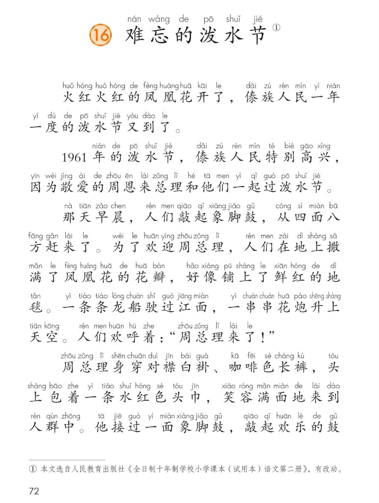
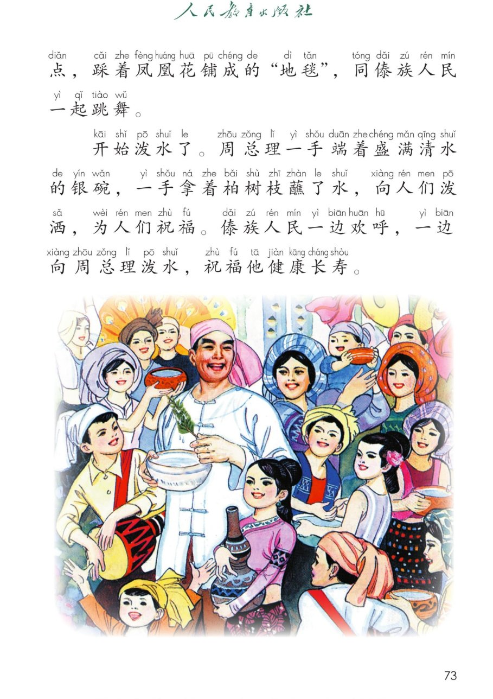
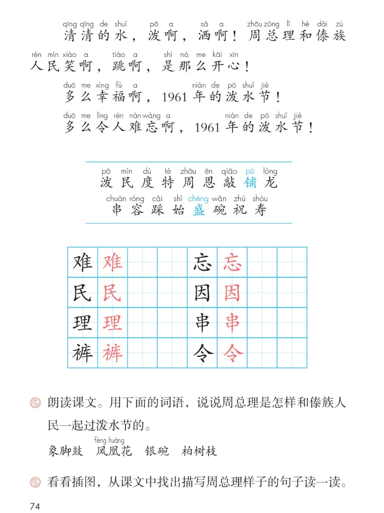

💦 第 16 课《难忘的泼水节》· 有声图文带读
统编版语文 · 第六单元·阅读 · 课本 第 72~74 页 · 作者：本文选自人民教育出版社《全日制十年制学校小学课本（试用本）语文第二册》，有改动
课文 8 个自然段
会认字 17
会写字 8
听写词 10
近义词 4 组
深入理解 8 题
本课本领 用词语说场面
🎧 五步学（可随时点任意一句、一个字、一个词单独听）：
① 听读课文——一句一句读，读到哪一句哪一句发光；开「跟读」后读完一句留时间让你自己读。
② 学字词——17 个会认字、8 个会写字（含书写提示），点一个读一个。
③ 词语·听写·造句——听写 10 个词（读两遍→你写→报答案→听示范句），再听 4 组近义词辨析。
④ 深入理解——8 道题（认知 / 理解 / 运用 / 拓展），开放题答案不唯一，先想后看。
⑤ 讲故事·分角色——按顺序说泼水节的经过，再分工朗读课文。
① 听读课文（点哪一句，读哪一句）点段前的 ①②③ 听整段
注音只标本课要认、要写的字，读音来自课本第 74 页生字表
🎤 朗读要求（老师标准）
① 读准字音，不添字、不漏字、不回读；
② 逗号稍停，句号停得长一点；
③ 1961 年、一年一度、四面八方这些词语要读清楚；
④ 火红火红、一条条、一串串要读得慢一点、重一点，让人听出又多又热闹；
⑤ 人们欢呼的那一句要读得又响又高兴，最后两段要读出幸福、难忘。
①火红火红的凤凰花开了，傣族人民一年一度的泼水节又到了。
②1961年的泼水节，傣族人民特别高兴，因为敬爱的周恩来总理和他们一起过泼水节。
③那天早晨，人们敲起象脚鼓，从四面八方赶来了。为了欢迎周总理，人们在地上撒满了凤凰花的花瓣，好像铺上了鲜红的地毯。一条条龙船驶过江面，一串串花炮升上天空。人们欢呼着：“周总理来了！”
④周总理身穿对襟白褂、咖啡色长裤，头上包着一条水红色头巾，笑容满面地来到人群中。他接过一面象脚鼓，敲起欢乐的鼓点，踩着凤凰花铺成的“地毯”，同傣族人民一起跳舞。
⑤开始泼水了。周总理一手端着盛满清水的银碗，一手拿着柏树枝蘸了水，向人们泼洒，为人们祝福。傣族人民一边欢呼，一边向周总理泼水，祝福他健康长寿。
⑥清清的水，泼啊，洒啊！周总理和傣族人民笑啊，跳啊，是那么开心！
⑦多么幸福啊，1961年的泼水节！
⑧多么令人难忘啊，1961年的泼水节！
🤔 想一想（点我可跳过）
课本的样子（点一张图，听读这一页）点一张图，听读整页

第 72 页 · 课题与课文前四段

第 73 页 · 泼水插图与课文五六段

第 74 页 · 生字表与课后题
📖 人教版《语文》二年级上册 · 课本第 72~74 页 · 图片仅供个人学习，版权归人民教育出版社所有
② 会认字（17 个）点一个字，听读音、词语和课文里的句子
② 会写字（8 个）结构、部首、笔画与书写提示为通用规范，供参考，以教材和老师的指导为准
难
nán
难忘 · 困难
10 画 · 左右（隹）
左窄右宽，四横要匀
忘
wàng
难忘 · 忘记
7 画 · 上下（心）
亡要小，心字底要宽
民
mín
人民 · 民族
5 画 · 独体（民）
横折要平，斜钩舒展
因
yīn
因为 · 原因
6 画 · 全包围（囗）
外框方正，里面写小
理
lǐ
总理 · 道理
11 画 · 左右（王）
王旁末笔变提
串
chuàn
一串串 · 串门
7 画 · 独体（丨）
两口扁，竖在正中
裤
kù
长裤 · 裤子
12 画 · 左右（衤）
衣旁窄，库撇舒展
令
lìng
令人 · 命令
5 画 · 上下（人）
人字头宽，上下对齐
③ 用下面的词语说一说（课后题）点一行，听读这一个词和课文里的句子
象脚鼓象脚鼓 敲起象脚鼓 一面象脚鼓
凤凰花凤凰花 凤凰花的花瓣 火红火红
银碗银碗 盛满清水的银碗 端着银碗
柏树枝柏树枝 蘸了水 泼洒
③ 听写（10 个词）读两遍 → 你在纸上写 → 报答案 → 听示范句
准备听写 · 共 10 个词
○ ○ ○
点下面的「开始听写」，听到一个词就写一个词。
③ 听写的词 · 造句示范点词听读，点句子听示范句，再自己说一句
1难忘会写字
示范句：多么令人难忘啊，一九六一年的泼水节！
✏️ 我也能说：什么 + 令人难忘
2人民会写字
示范句：傣族人民特别高兴。
✏️ 我也能说：哪里的 + 人民 + 怎么样
3因为会写字
示范句：因为敬爱的周恩来总理和他们一起过泼水节。
✏️ 我也能说：因为……所以……
4总理会写字
示范句：周总理一手端着盛满清水的银碗。
✏️ 我也能说：周总理 + 做什么
5一串串会写字
示范句：一串串花炮升上天空。
✏️ 我也能说：一串串 + 什么
6长裤会写字
示范句：周总理身穿对襟白褂、咖啡色长裤。
✏️ 我也能说：谁 + 穿着 + 什么长裤
7令人会写字
示范句：多么令人难忘啊！
✏️ 我也能说：什么 + 令人 + 怎么样
8泼水会认字
示范句：开始泼水了。
✏️ 我也能说：谁 + 在哪里 + 泼水
9凤凰花课文核心词
示范句：火红火红的凤凰花开了。
✏️ 我也能说：怎样的凤凰花 + 开了
10祝福会认字
示范句：向人们泼洒，为人们祝福。
✏️ 我也能说：谁 + 祝福谁 + 什么话
③ 近义词辨析（4 组）相同点 / 不一样在哪 / 各造一句
特别 — 非常
相同：都是程度很深，就是“很”的意思。
不一样：特别还多一层“跟别的不一样”；非常只表示程度深，没有这层意思。
特别：傣族人民特别高兴。
非常：今天的风非常大。
敬爱 — 尊敬
相同：都是又敬重又喜爱。
不一样：敬爱多用在长辈、老师、领袖身上，带着亲切的爱；尊敬偏重佩服、有礼貌，对人对职业都能用。
敬爱：敬爱的周恩来总理和他们一起过泼水节。
尊敬：我们尊敬每一位老师。
欢呼 — 欢叫
相同：都是高兴地大声喊。
不一样：欢呼多指很多人一起高兴地喊，常写热闹的大场面；欢叫更随便，一个人、几个人都能用。
欢呼：人们欢呼着“周总理来了！”
欢叫：小鸟在树上欢叫。
好像 — 仿佛
相同：都是有点像、就像的意思。
不一样：好像是口语，平时说话常用；仿佛更像书面语，多用在文章里。
好像：好像铺上了鲜红的地毯。
仿佛：仿佛走进了画的中间。
③ 词语拓展（说一说，记一记）
数量词重叠一条条龙船 一串串花炮 一朵朵水花 一阵阵欢呼
颜色词火红火红 鲜红 水红色 咖啡色 清清的水
两个动作一起做一手端着银碗 一手拿着柏树枝 一边欢呼 一边泼水
写热闹的场面敲起 赶来 撒满 驶过 升上 欢呼
带“啊”的感叹泼啊 洒啊 笑啊 跳啊 多么幸福啊 多么令人难忘啊
④ 深入理解（8 题 · 先想后看）标「答案不唯一」的题，说得有道理都对
认知1961 年的泼水节，傣族人民为什么特别高兴？
看解析
🤔 想一想
解析：
平常：泼水节一年只有一次，本来就高兴。
这一年：1961 年，敬爱的周恩来总理来和他们一起过泼水节。
所以：比平常的泼水节更高兴。
💡 读一件事，先找出“谁、什么时候、发生了什么”，问答就不会漏
认知周总理那天穿的是什么？从课文里找出写他样子的句子。
看解析
🤔 想一想
解析：
头上：一条水红色头巾。
上身：对襟白褂。
下身：咖啡色长裤。
脸上：笑容满面。
💡 写一个人的样子，可以从头看到脚，最后加上脸上的表情——这就是课后第 2 题
理解人们是怎样欢迎周总理的？课文写了四种，一样一样说出来。
看解析
🤔 想一想
解析：
听到的：敲起象脚鼓，从四面八方赶来。
地上的：撒满了凤凰花的花瓣，好像铺上鲜红的地毯。
江面和天空：龙船驶过江面，花炮升上天空。
嘴里喊的：人们欢呼着，周总理来了。
💡 热闹的场面可以分“听到的、地上的、江面天空的、嘴里喊的”几方面找，一样也不会漏
理解“好像铺上了鲜红的地毯”，为什么说花瓣像地毯？
看解析
🤔 想一想
解析：
地毯：是铺在地上、让人走在上面的一大片。
花瓣：撒满了地上，颜色鲜红，也是一大片。
好像：是打比方，不是真的地毯。
💡 看到“好像”“仿佛”，就知道这里在打比方，要比一比两样东西哪里像
理解周总理向人们泼水，傣族人民也向周总理泼水，这两次泼水各是什么意思？
看解析
🤔 想一想
解析：
周总理的心意：把清水洒给大家，为大家祝福。
傣族人民的心意：把水洒给总理，祝福他健康长寿。
水在这里的意思：清水是吉祥、祝福，谁身上被洒的水多，谁得到的祝福就多。
💡 同一个动作，两边的心意是一样的——都在把祝福送给对方
运用用“象脚鼓、凤凰花、银碗、柏树枝”四个词，说说周总理是怎样和傣族人民一起过泼水节的。
看解析
🤔 想一想
解析：
先说欢迎：人们敲起象脚鼓赶来，地上撒满凤凰花的花瓣。
再说跳舞：周总理接过象脚鼓敲起来，踩着花瓣地毯跳舞。
最后说泼水：他端着银碗、拿着柏树枝，把水洒向大家。
💡 这就是课后第 1 题。四个词按“欢迎→跳舞→泼水”的顺序用进去，话就顺了
🌈 答案不唯一，说得有道理都对
运用照课文说一句话，用上“一手……一手……”。
看解析
🤔 想一想
解析：
课文里的句子：周总理一手端着盛满清水的银碗，一手拿着柏树枝蘸了水。
怎么用：两件事是同时用两只手做的，才能用“一手……一手……”。
自己想一想：你有哪两件事常常一起做？
💡 两个动作要能同时做才对；一个做完再做另一个，就不能用这个句式
🌈 答案不唯一，说得有道理都对
拓展课文说这是“令人难忘”的泼水节。想一想，为什么难忘？说出两三个理由。
看解析
🤔 想一想
解析：
理由一·人不一样：敬爱的周恩来总理来和大家一起过节。
理由二·情意深：周总理和大家一起敲鼓跳舞泼水，一点不特殊。
理由三·心里甜：每个人都那么开心，祝福送到心里，一辈子记得。
🌈 答案不唯一，说出自己的想法和理由就行
🌈 答案不唯一，说得有道理都对
⑤ 按顺序说泼水节的经过先说花开，再说泼水，最后说难忘
💬 讲故事支架：先说火红火红的凤凰花开了，一年一度的泼水节又到了 → 再说 1961 年周总理来了，人们怎样欢迎他 → 接着说周总理的样子，他怎样敲鼓、跳舞 → 然后说开始泼水，两边怎样互相祝福 → 最后说多么幸福、多么令人难忘。
⑤ 分工朗读课文点一个角色，听他读这一部分；五个人接起来就是全文
🌺 开篇讲解员
“火红火红的凤凰花开了……”
💬 头一句要读得又美又慢；第二句“特别高兴”要读得亮一点
🥁 欢迎讲解员
“那天早晨，人们敲起象脚鼓……”
💬 前三句要读得一句比一句热闹；最后一句要读得又响又快，像在喊
😊 总理讲解员
“周总理身穿对襟白褂……”
💬 第一句读得清楚、慢，像在给大家指他身上的穿戴；第二句读得轻快、高兴
💦 泼水讲解员
“开始泼水了……”
💬 “一手……一手……”要读得对称；“健康长寿”要读得郑重
🎉 欢乐讲解员
“清清的水，泼啊，洒啊……”
💬 前两句读出笑声，后两句要读得慢、深，把幸福和难忘读出来